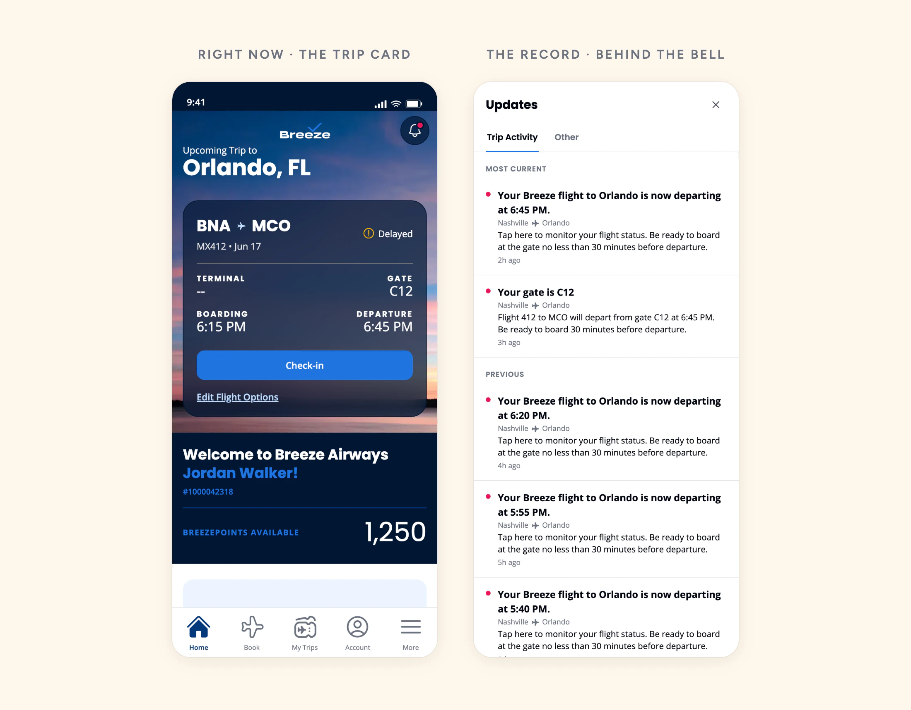

A Record, Not an Alarm
Breeze's Notification Center, and where flight updates belong
Executive Summary
Breeze sends pushes about delays, gate changes, and check-in. Swipe one away and it's gone. I designed the Notification Center: one place to go back to what Breeze told you.
Testing kept saying people couldn't find it. The reason turned out to be good news: they were finding their flight status on the trip card, right where it belongs. So the trip card owns what's happening now, and the Notification Center is a quiet record of what we told you.
It's live in the app and on the web.
Role:
Product Designer, UX Researcher
Duration:
May to June 2026
Responsibilities:
UX/UI, study design, testing, analysis
The Problem
Messages That Disappear
A push is easy to lose. Once it's swiped away, there's nowhere to see it again: not the old gate, not the new time, not the link you didn't tap. The team kept hearing the same thing:
I'm sure you guys sent something, I just can't find it.
It showed up in our survey scores too. In early 2026, 303 detractors said Breeze went silent on them, including guests whose messages were confirmed delivered. If you can't see a message twice, delivered and never sent look the same.
The Design
A Record of What Breeze Told You
A few calls kept it honest and simple:
- Push messages only. It never pretends to hold your texts or emails.
- Trip updates and everything else get their own tabs, with the latest update first.
- The route on every message, so a trip with two flights stays clear.
- The whole row is the link. Tap a delay and you land on your flight, with no extra buttons.

Can People Find It?
The Trip Card Kept Winning
In the first test, only 14% of people went to the bell when asked to find their flight update. The reason was on the same screen: the trip card showed a big "Delayed" badge, and that's where they tapped.
On a home with no trip, about 60% went straight to the bell. Same bell. The only thing that changed was whether the trip card was there to answer the question first.
People weren't failing to find the record. They were finding their flight status, right where it should be.
Two Jobs, Two Places
Status on the Card, History Behind the Bell
That split the problem in two. "What's happening with my flight right now" belongs on the trip card. "What did Breeze tell me" belongs in the record.
We still tested how loud the door should be. On a calm, on-time home with neutral wording, an "Updates" button on the trip card was found far more often than the bell.

The button won, and we still went with the bell. A record that shouts competes with things that matter more, like check-in and your gate. About half finding it cold is right for a log you open when you want it, and a count on the bell barely helped.
That only works if urgent news reaches people by push first, so I checked that push opt-in was healthy before we locked it.
Where It Stands
- The Notification Center is live in the app and on the web, with the quiet bell and a dot
- Live flight status on the trip card became its own piece of work
- Every number here is hand-coded from session recordings, since the test platform didn't record taps. Treat them as directional